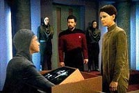
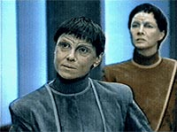
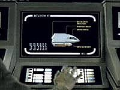
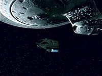
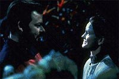

|
MANCHETE
DO EPISDIO
Histria
bem-intencionada mostra que
de boas intenes o inferno est cheio...
Episdio
anterior | Prximo
episdio
Sinopse:
Data Estelar: 45614.6.
A Enterprise trabalha em cooperao com uma espcie andrgena
chamada J'naii, em uma tentativa conjunta de encontrar e resgatar a
tripulao de uma nave J'naii desaparecida. Eles rapidamente
descobrem que a nave provavelmente foi parar em um "bolso de
espao nulo", onde sua energia eletromagntica est sendo
drenada, impedindo sinais de comunicao de alcanarem o
exterior.
 Riker
comea a trabalhar com um dos J'naii, Soren, para mapear o bolso.
Ambos ficam fascinados pelas diferenas entre suas culturas: o
conceito de gnero to integrado em Riker e to aliengena
para os J'naii, que torna o contato entre as duas espcies bastante
extico. Apesar disso, os dois rapidamente se tornam amigos.
A misso de mapeamento bem-sucedida, e so iniciadas as preparaes
para modificar uma nave auxiliar de modo que possa funcionar dentro
do bolso por tempo suficiente para resgatar a tripulao.
Entretanto, as surpresas j comeam na noite anterior ao lanamento,
quando Soren confessa estar atrada por Riker. Ela diz que no
pode revelar essa informao publicamente, pois os J'naii
consideram o conceito de gnero repugnante e equivocado, e aqueles
que demonstram tendncia a um gnero ou a outro so rotulado de
transviados e "curados" por meio de lavagem cerebral.
Soren, e seus iguais, vivem vidas secretamente, cheias de fingimento
e medo. Riker fica chocado.
Na manh seguinte, os dois conseguem resgatar com sucesso a tripulao
da nave J'naii (apesar de terem perdido a prpria nave). Na recepo
em J'naii promovida em homenagem a eles, naquela noite, Riker e
Soren procuram um lugar a ss. A ausncia de Soren percebida
por seu ex-professor, Krite.
 A
Enterprise permanece em rbita para mapear o bolso mais
detalhadamente. Entretanto, Riker fica chocado quando, ao entrar nos
aposentos de Soren, ele encontra Krite, que o informa de que sabe do
que ele e Soren tm feito, e de que Soren est sob custdia para
garantir que isso no volte a acontecer.
Riker imediatamente se transporta para a superfcie e interrompe o
julgamento de Soren. Ele diz que nada aconteceu, e que todas as
tentativas feitas foram de sua prpria iniciativa. Soren,
entretanto, se recusa a adicionar outra mentira ao julgamento e
audaciosamente anuncia que de fato uma fmea. Ela mostra o quo
parecida ela aos J'naii "normais": eles riem, choram,
reclamam e assim por diante. "O que faz vocs pensarem que
podem ditar como devemos amar uns aos outros?", ela alega.
Mesmo assim, o lder J'naii Noor no se mobiliza pelo discurso,
aceitando-o como a confisso da "perverso" de Soren.
Noor ordena que ela seja levada para tratamento, apesar dos
protestos de Riker. O primeiro-oficial volta Enterprise e conta a
Picard tudo o que aconteceu, mas Picard diz que se Noor est
decidida, nada pode ser feito --ele avisa Riker dos riscos de pegar
a questo e decidir com suas prprias mos, ao custo de sua vida
e carreira na Frota.
Apesar disso, Riker desce ao planeta (junto com Worf, que se
voluntaria para ajudar o amigo) e tenta resgatar Soren. Para seu
horror, entretanto, ele descobre ter chegado tarde demais. Soren
agora acredita que suas aes anteriores eram doentias, e diz
estar muito mais feliz como uma J'naii "normal". De corao
partido, Riker volta Enterprise, que deixa o sistema em seguida.
Comentrios:
"The
Outcast" escolhe um tema espinhoso para fazer um episdio
familiar. Embora seu contedo seja bastante eloquente, ele prefere
optar por se esquivar da abordagem direta questo equivalente em
seres humanos: o homossexualismo.
O episdio seria muito mais audacioso se no ficasse clara a tendncia
"feminina" de Soren. Se fosse apenas um ser assexuado que
resolveu perseguir uma vida sexuada. Isso sem dvida serviria para
demonstrar a ausncia de preconceito no sculo 24 de forma muito
mais eloquente do que a exposta aqui.
 Mesmo
assim, se a audincia conseguir expandir alm da superfcie, ver
que o mesmo discurso que defende o direito de Soren a sua
sexualidade vale para o homossexualismo humano ou qualquer outro
tipo de tabu de ordem sexual (contanto que ele no envolva aes
prejudiciais a outras pessoas).
Independentemente de pregar uma mensagem favorvel ao respeito
sobre a opo sexual de cada um, seja ela qual for, precisamos
admitir que o episdio bastante conservador, mantendo em seu
cerne certos preconceitos desnecessrios.
Um deles a aparente natureza "biolgica" do
comportamento sexuado de Soren e de outros J'naii como ela. Seria
mais interessante se ficasse claro que a ligao era mais forte
pelo lado psicolgico. Isso reflete uma idia de que h um forte
componente gentico em comportamentos sexuais pouco usuais,
argumento que at agora se mostrou pouco slido, se levada em
conta qualquer evidncia cientfica.
Talvez o mais audacioso detalhe do episdio, em termos de discusso
filosfica, seja a exposio da "felicidade" de Soren
depois de seu "tratamento". Parece aberrante e desumano a
princpio, mas certamente vlido perguntar se tal atitude no
poderia ser justificvel, dada sua grande eficcia. O que faz algum
pensar que o livre arbtrio importante de algum modo neste caso?
 A
resposta, obviamente, que no se pode permitir que as liberdades
individuais sejam reprimidas de forma to agressiva e unilateral.
como o pssimo hbito que havia antigamente de tentar impor aos
canhotos a necessidade de escrever com a mo direita. De fato, pode
at no ser relevante a mo com que o sujeito escreve, mas
inegvel o fato de que ele tem o direito a usar suas mos da forma
que lhe for mais conveniente. E se, geneticamente, ele canhoto,
bvio que sua coordenao ser muito mais desenvolta se ele
permanecer assim.
Por outro lado, e se a existncia dos J'naii dependesse de sua
assexualidade? E se a reproduo sexuada fosse impossvel para
eles e o abandono do mtodo assexuado fosse o provvel causador de
sua extino? Neste caso seria justo reprimir movimentos
"sexuados"? Esse um caso tpico de dilema: no h
soluo correta. Se o episdio tivesse detalhado mais a questo,
poderamos at especular, mas como no o fez, a mensagem que fica
clara que h um grande preconceito contra a existncia de
pessoas "sexuadas" --assim como h os que tm
preconceito contra homossexuais, aqui na Terra.
E por falar em preconceito, estranho que Worf, justamente o mais
incomodado com a natureza diferente dos J'naii, fosse ajudar Riker a
resgatar Soren. No teria ele, partindo da viso enviesada que ele
demonstrou ter com relao questo, achar que o melhor para
Riker seria mesmo esquecer aquele aliengena? Esse ponto da histria
parece particularmente arbitrrio.
D para sentir a falta da dra. Crusher neste episdio. Insights de
natureza mdica com relao ao tema fariam bem questo, e
ajudariam Riker a decidir o "dilema" de forma menos
passional e mais informada, obrigao de todo oficial da Frota
Estelar ao lidar com culturas aliengenas.
 A
grande verdade que "The Outcast" fala de forma
cristalina sobre a problemtica da sexualidade para ns, terrqueos,
mas deixa um monte de dvidas com relao ao problema no-metafrico
apresentado pelo episdio em si, incluindo a uma possvel
atitude preconceituosa por parte da roteirista Jeri Taylor, e, por
consequncia, de William Riker.
Pode o primeiro-oficial julgar uma cultura aliengena e um
potencial problema mdico com base apenas em sua cultura, sem
sequer consultar sua mdica de bordo ou a conselheira da nave (Riker
procurou Troi, mas no para discutir esse aspecto da questo)? No
seria esse um comportamento equivocado?
Enfim, "The Outcast" serviu como mais um recado
(nem tanto) subliminar para a gerao que cresceu vendo A Nova
Gerao, mas deixou a desejar na hora de converter a
"mensagem da semana" em um grande e audacioso episdio de
fico cientfica e na hora de evitar os velhos clichs.
Citaes:
Riker - "Nothing
will change between us, won't it?"
("Nada vai mudar entre ns, vai?")
Troi - "Of course it will. All relationships are constantly
changing. But we'll still be friends, maybe better friends."
("Claro que vai. Todas as relaes esto constantemente
mudando. Mas ainda seremos amigos, talvez melhores amigos.")
Trivia:
 Aqui La Forge aparece rapidamente usando barba. Aproveite e veja
agora, pois isso nunca mais ocorrer na srie.
Aqui La Forge aparece rapidamente usando barba. Aproveite e veja
agora, pois isso nunca mais ocorrer na srie.
Neste episdio reaparece a nave USS Magellan, vista em "Darmok".
A
nave de transporte dos J'naii, Taris Murn, vista rapidamente neste
episdio, a mesma nave utilizada como a Nenebek no episdio "Final
Mission", e como o casulo temporal de Rasmussen em "A
Matter of Time".
Neste episdio dito que a Federao foi fundada em 2161.
Ficha
tcnica:
Escrito por Jeri Taylor
Direo de Robert Scheerer
Exibido em 16/03/1992
Produo: 117
Elenco:
Patrick Stewart como
Jean-Luc Picard
Jonathan Frakes como William Thomas Riker
Brent Spiner como Data
LeVar Burton como Geordi La Forge
Michael Dorn como Worf
Gates McFadden como Beverly Crusher
Marina Sirtis como Deanna Troi
Elenco convidado:
Melinda Culea como
Soren
Callan White como Krite
Megan Cole como Noor
Episdio
anterior | Prximo
episdio
|